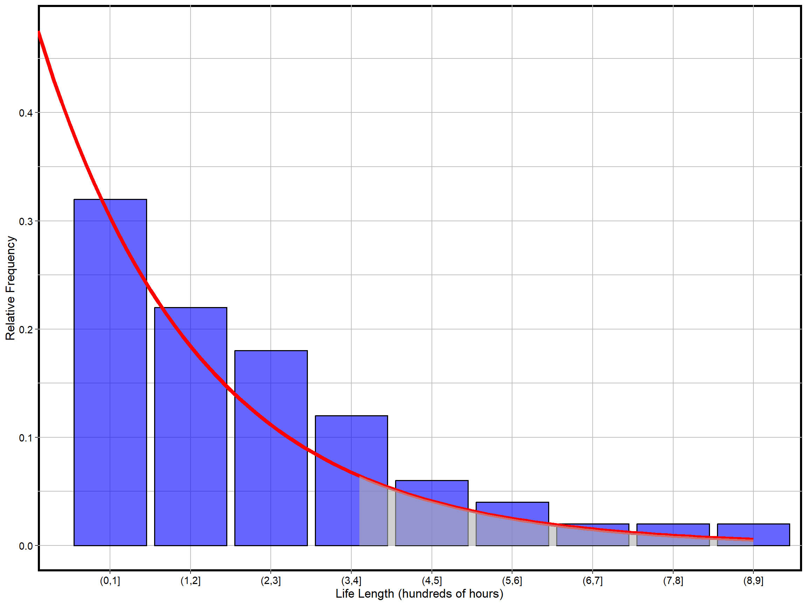
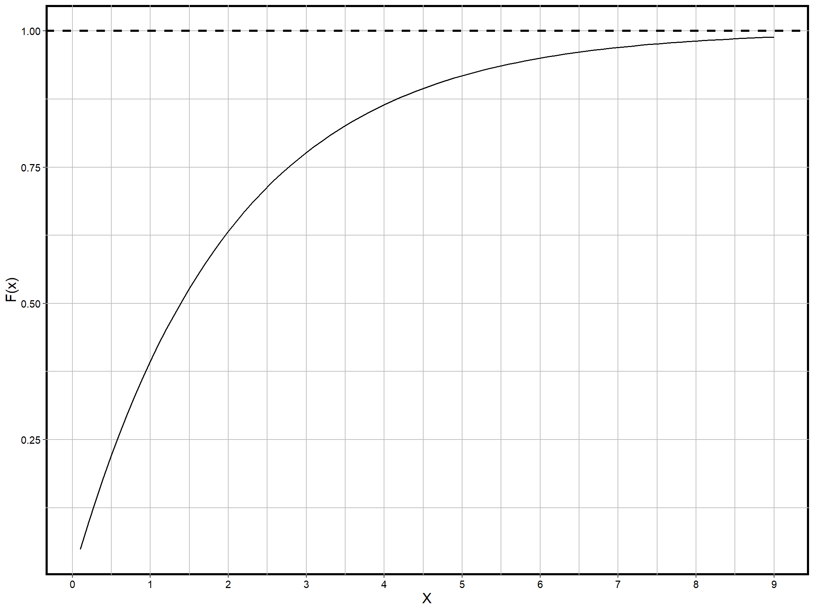

library(here)
library(ggplot2)
library(rootSolve)
library(kableExtra)
library(data.table)
library(RplotterPkg)Continuous Probability Distributions
Setup
4.1 Continuous Random Variables and Their Probability Distributions
…we have measured the life lengths of 50 batteries of a certain type, selected from a larger population of such batteries.
data_file_path <- file.path(here::here(), "data", "battery_hours.csv")
bat_hours_dt <- data.table::fread(data_file_path) |>
data.table::setorderv(cols = "hours")
kableExtra::kable(bat_hours_dt[1:6,])| idx | hours |
|---|---|
| 31 | 0.023 |
| 50 | 0.186 |
| 32 | 0.225 |
| 12 | 0.234 |
| 9 | 0.294 |
| 38 | 0.333 |
Grouping the battery lengths into 9 intervals and computing their relative frequencies we have:
hours_cut_tbl <- table(cut(x=bat_hours_dt$hours, breaks = seq(0,9,1),labels = FALSE, right = TRUE))
hours_cut <- levels(cut(seq(0,9,1), breaks = seq(0,9,1), right = TRUE))
hours_cut_dt <- data.table::as.data.table(hours_cut_tbl) |>
_[, `:=`(rel_freq = N/50.0, label = as.factor(hours_cut))] |>
data.table::setnames(old = "V1", new = "interv")
kableExtra::kable(hours_cut_dt)| interv | N | rel_freq | label |
|---|---|---|---|
| 1 | 16 | 0.32 | (0,1] |
| 2 | 11 | 0.22 | (1,2] |
| 3 | 9 | 0.18 | (2,3] |
| 4 | 6 | 0.12 | (3,4] |
| 5 | 3 | 0.06 | (4,5] |
| 6 | 2 | 0.04 | (5,6] |
| 7 | 1 | 0.02 | (6,7] |
| 8 | 1 | 0.02 | (7,8] |
| 9 | 1 | 0.02 | (8,9] |
32% or 16 of the 50 observations fall into the first interval [0, 1].
The relative frequency histogram for these data shows clearly that most of the life lengths are near zero, and the frequency drops off rather smoothly as we look at longer life lengths.
exp_curve_fun <- function(x){0.5 * exp(-x/2)}
exp_curve_dt <- data.table(
x = seq(0.1,9,0.1),
y = sapply(seq(0.1,9,0.1), exp_curve_fun)
)x_400 <- 4.1
y_400 <- exp_curve_fun(x_400)
RplotterPkg::create_bar_plot(
df = hours_cut_dt,
aes_x = "label",
aes_y = "rel_freq",
x_title = "Life Length (hundreds of hours)",
y_title = "Relative Frequency",
rot_y_tic_label = TRUE,
bar_fill = "blue",
bar_alpha = 0.6) +
geom_line(data = exp_curve_dt, aes(x= x, y = y), color = "red", linewidth = 2) +
geom_ribbon(data = exp_curve_dt[x >= x_400,], aes(x = x, ymin = 0, ymax = y), fill = "grey70", alpha = 0.6)
This histogram of Figure 4.1 looks as though it could be approximated quite closely by a negative exponential curve.
\[f(x) = \frac{1}{2}\exp^{-\frac{x}{2}}, x > 0\]
The red line approximates this particular function.
If we want to use a battery of this type in the future, we might want to know the probability that it will last longer than 400 hours.
The gray area to the right of the value 4 in figure 4.1 approximates this probability. Calculate the gray area under the curve with an integration under the curve starting at 4:
\(\hspace{25em}P(X\gt 4)\)
\(\hspace{28em}=\displaystyle\int^\infty_4\frac{1}{2}\exp^{\frac{x}{2}}\mathrm{d}x\)
Since the antiderivitive for evaluating the integral is \(-e^{-\frac{x}{2}}\quad|^b_a\)
\(\hspace{28em}=(-e^{-\frac{\infty}{2}}) - (-e^{-\frac{4}{2}})\)
\(\hspace{28em}=(0) + (e^{-2})\)
integral_val <- function(x){-exp(-x/2)}
P_4_inf <- integral_val(Inf) - integral_val(4)The probability of \(X\) greater than 400 hours is 0.1353353
For comparison the sample had 8 observations greater than 400 hours or 8/50 = 0.16.
The function \(f(x)\), which models the relative frequency behavior of \(X\), is called the probability density function or pdf.
Definition 4.1: Probability density function(pdf)
\(f(x)\) is called a probability density function, such that:
\(f(x) \geq 0\) for all \(x\)
\(\displaystyle\int^\infty_{-\infty}f(x)dx = 1\)
\(P(a \le X \le b) = \int^b_af(x)dx\)
Note that for a specific value for the pdf, the probability is 0:
\[P(X=a)=\int^a_af(x)\mathrm{d}x=0\]
P_4_4 <- integral_val(4) - integral_val(4)\(P(X=400)=\) 0
Assigning probability zero does not rule out \(a\) as a possible battery length, but it does imply that the chance of observing this particular length is extremely small.
Example 4.1
Find the probability that the life of a particular battery of this type is less than 200 or greater than 400 hours.
\(\hspace{25em}P(X < 200 \cup X > 400)\)
\(\hspace{28em}=P(X < 200) + P(X > 400)\)
\(\hspace{28em}=\displaystyle\int^2_0\frac{1}{2}\exp^{\frac{x}{2}}\mathrm{d}x + \int^\infty_4\frac{1}{2}\exp^{\frac{x}{2}}\mathrm{d}x\)
\(\hspace{28em}=(-e^\frac{-2}{2}) - (-e^\frac{0}{2}) + 0 - (-e^\frac{-4}{2})\)
\(\hspace{28em}=(-e^{-1} + 1) + (e^{-2})\)
\(\hspace{28em}=(0.6321) + (0.1353) = 0.7674\)
P_0_2 <- integral_val(2) - integral_val(0)
P_0_2_U_4_inf <- P_0_2 + P_4_inf\(P(X < 200 \cup X > 400) =\) 0.7674558
Example 4.2
Find the probability that a battery of this type lasts more than 300 hours, given that it already has been in use for more than 200 hours.
\(\hspace{25em}P(X > 3|X > 2)\)
\(\hspace{28em}=\dfrac{P(X > 3)}{P(X > 2)}\)
\(\hspace{28em}=\dfrac{\displaystyle\int^\infty_3\frac{1}{2}e^{-\frac{1}{2}}\mathrm{d}x}{\displaystyle\int^\infty_2\frac{1}{2}e^{-\frac{1}{2}}\mathrm{d}x}\)
\(\hspace{28em}=\dfrac{(-e^{-\frac{\infty}{2}} - (-e^{-\frac{3}{2}}))} {(-e^{-\frac{\infty}{2}} - (-e^{-\frac{2}{2}}))}\)
\(\hspace{28em}=\dfrac{e^{-\frac{3}{2}}}{e^{-\frac{2}{2}}}\)
\(\hspace{28em}=e^{-\frac{1}{2}}\)
P_2_inf <- integral_val(x = Inf) - integral_val(x = 2)
P_3_inf <- integral_val(x = Inf) - integral_val(x = 3)
P_3_inf_i_2_inf <- P_3_inf/P_2_inf\(P(X>3|X>2)=\) 0.6065307
Definition 4.2: Distribution function (df)
…cumulative probabilities of the form \(P(X \leq b)\).
The distribution function for a random variable \(X\) is defined as:
\[F(b) = P(X \leq b) = \int^b_{-\infty}f(x)\mathrm{d}x\] Note that \(F'(x)=f(x)\)
For the battery example, \(X\) has a df given by:
\(\hspace{25em}F(b)=P(X\le b)\)
\(\hspace{28em}=\displaystyle\int^b_0\frac{1}{2}e^{-\frac{x}{2}}\mathrm{d}x\)
\(\hspace{28em}=-e^{-\frac{x}{2}} |^b_0\)
\(\hspace{28em}=1-e^{-\frac{b}{2}}\qquad b>0\)
\(\hspace{28em}=0\qquad b\le 0\)
Using the distribution function find the probability for battery hours to be greater than 400.
\(\hspace{25em}P(X > 4) = 1 - P(X \le 4)\)
\(\hspace{28em}=1 - F(4)\)
\(\hspace{28em}=1 - \displaystyle\int^4_0\frac{1}{2}e^{\frac{-x}{2}}\)
\(\hspace{28em}=1 - ((-e^{-\frac{4}{2}}) - (-e^{-\frac{0}{2}}))\)
\(\hspace{28em}=1 + (e^{-2}) - (1)\)
\(\hspace{28em}=e^{-2}\)
P_4_inf <- 1 - (integral_val(4) - integral_val(0))Using the distribution function \(P(X > 4) =\) 0.1353353, which is the same value we computed above.
Plot the distribution function for the battery hours density function.
dist_curve_fun <- function(x){1 - exp(-x/2)}
dist_curve_dt <- data.table(
x = seq(0.1,9,0.1),
y = sapply(seq(0.1,9,0.1), dist_curve_fun)
)
RplotterPkg::create_scatter_plot(
df = dist_curve_dt,
aes_x = "x",
aes_y = "y",
x_title = "X",
y_title = "F(x)",
bold_y = 1,
connect = TRUE,
show_pts = FALSE,
rot_y_tic_label = TRUE,
x_major_breaks = seq(0, 9, 1)
)
Exercises
4.3
pdf = \(f(x)=\frac{3}{32}(x - 2)(6 - x)\quad for \quad 2 \le x \le 6\)
\(P(a \le X \le b) = \int^b_a\frac{3}{32}(x - 2)(6 - x)dx\)
integral_val = \(\frac{3}{8}x^2-x^3/32-\frac{9}{8}x\)
integral_val <- function(x){(3/8)*x^2 - (x^3/32) - (9/8)*x}- \(P(X>3)=\int\frac{3}{8}x^2-x^3/32-\frac{9}{8}x \quad |^6_3\)
P_3_6 <- integral_val(6) - integral_val(3)\(P(X>3)=\) 0.84375
- \(P(X>5)\), find \(X\)
For P(X > 5), find X as the root of: 0.5 - (integral_val(6) - integral_val(x)) between the range 2 and 6.
root_fun <- function(x){0.5 - (integral_val(6) - ((3/8)*x^2 - (x^3/32) - (9/8)*x))}
X <- rootSolve::uniroot.all(root_fun, lower = 2, upper = 6)The amount of solar radiation that exceeds exactly 50% of the October days is 4
4.4
pdf = \(f(x)=\frac{3}{64}x^2(4-x) \quad for \quad 0 \le x \le 4\)
\(P(a \le X \le b) = \int^b_a\frac{3}{64}x^2(4-x)\)
integral_val = \(\frac{x^3}{16}-\frac{3x^4}{256}\)
integral_val <- function(x){(x^3)/16 - (3 * x^4)/256}- \(F(x) = \hspace{5em}\frac{x^3}{16}-\frac{3x^4}{256} \quad |_0^b\)
\(\hspace{7em}=(\frac{256}{256})(\frac{x^3}{16}-\frac{3x^4}{256})\)
\(\hspace{7em}=\frac{x^3}{256}(16 - 3x)\)
- \(P(X>2)\)
P_2_4 <- integral_val(4) - integral_val(2)\(P(X>2)\) = 0.6875
- \(P(X>3)\)
P_3_4 <- integral_val(4) - integral_val((3))\(P(X>3)\) = 0.2617188
- Find \(X\) where a probability of exceeding is 0.10
Find X as the root of: 0.10 - (integral_val(4) - integral_val(x)) between the range 0 to 4
root_fun <- function(x){0.10 - (integral_val(4) - ((x^3)/16 - (3 * x^4)/256))}
X <- rootSolve::uniroot.all(root_fun, lower = 0, upper = 4)The amount of cpu hours to be budgeted with a probability which is exceeded only 10 percent of the time is 3.4299372
4.8
pdf = \(f(x)=12x^2(1-x)\quad for \quad 0 \le x \le 1\)
\(P(a\le X\le b) = \int^b_a 12(\frac{x^3}{3}-\frac{x^4}{4})\)
integral_val = \(12(\frac{x^3}{3}-\frac{x^4}{4})\)
integral_val = function(x){12 * ((x^3)/3 - (x^4)/4)}Probability of finding one sample with 50% or more of impurities \(Pr(X>.5)\):
P_.5_1 <- integral_val(1) - integral_val(0.5)Using formula for binomial distribution on page 94 and n = 4:
- Out of 4 samples, the probability of exactly one sample having a proportion of impurities exceeding 0.5:
\(P(X = 1) = np(1 - p)^{n-1}\)
P_X_1 <- 4 * (P_.5_1) * ( 1 - P_.5_1)^3Probability of having exactly one sample out of four with impurities is 0.0839233.
- Probability out of 4, of at least one sample having a proportion of impurities exceeding 0.5
\(P(X \ge 1) = 1-(1-p)^n\)
P_X_ge_1 <- 1 - (1 - P_.5_1)^4Probability or having at least one sample with a proportion of impurities exceeding 0.5 is 0.9904633
4.2 Expected values of continuous random variables
Definition 4.3: Expected value
…expected value of a continuous random variable \(X\) that has a pdf of \(f(x)\) is given by:
\[E(X)= \int^{+\infty}_{-\infty}xf(x)\mathrm{d}x\]
Compare the observed and model mean:
The observed mean:
mean_ob <- mean(bat_hours_dt$hours)The observed mean is 2.26794
For the model:
\(\hspace{25em}E(X) = \displaystyle\int^\infty_{-\infty}xf(x)\)
\(\hspace{28em}=\displaystyle\int^9_0\frac{x}{2}e^{\frac{-x}{2}}\)
\(\hspace{28em}=-e^\frac{-x}{2}(x + 2)\quad|^9_0\)
\(\hspace{28em}=(-0.12219)-(-2) = 1.878\)
integral_val <- function(x){-exp(-x/2) * (x + 2)}
E_X <- integral_val(9) - integral_val(0)The expected value \(E(X)\) = 1.877801
Theorem 4.1: \(E[g(X)]\) for \(X\) with a pdf \(f(x)\) and another function \(g(x)\)
\[E[g(X)]=\int^{+\infty}_{-\infty}g(x)f(x)\mathrm{d}x\]
Following Theorem 4.1 we can define the variance for a random variable \(X\) with pdf \(f(x)\) and \(g(x) = (x - c)^2\) as:
\(\hspace{25em}V(X)=E(X-\mu)^2\)
\(\hspace{28em}=\displaystyle\int^{+\infty}_{-\infty}(x-\mu)^2f(x)\mathrm{d}x\)
\(\hspace{28em}=E(X^2)-\mu^2 \quad \mu=E(X)\)
With constants \(a\) and \(b\) we can also define the following:
\[E(aX+b)= aE(X)+b\] \[V(aX+b)=a^2V(X)\]
Compare the observed and model variance:
For the observed variance:
Var_ob <- var(bat_hours_dt$hours)The observed variance is 3.7343059
For the model variance \(V(X)\), we first compute \(E(X^2)\):
\(\hspace{25em}E(X^2)=\displaystyle\int^{\infty}_{-\infty}x^2f(x)dx\)
\(\hspace{28em}=\displaystyle\int^9_0x^2(\frac{1}{2}e^{\frac{-x}{2}})\)
\(\hspace{28em}=-e^\frac{-x}{2}(x^2+4(x+2))\quad|^9_0\)
Then, \(\hspace{25em}V(X) = E(X^2) - \mu^2 \quad where \quad \mu=E(X)\)
integral_val <- function(x){-exp(-x/2)*(x^2 + 4 * (x + 2))}
Var_model <- integral_val(9) - integral_val(0) - E_X^2The variance \(V(X)\) for the model is 3.0852387
Exercises
4.10
- pdf = \(f(x) = 2x \quad for \quad 0 \le x \le 1\)
\(E(X)=\int^\infty_\infty xf(x) = \int^1_0(x)(2x)\)
integral_val = \(\frac{2x^3}{3}\)
integral_val <- function(x){(2 * x^3)/3}
E_X <- integral_val(1) - integral_val(0)\(E(X)=\) 0.6666667
For the variance:
\(V(X)=E(X^2) - E(X)^2\)
\(E(X^2) = \int^1_0(x^2)(2x)\)
integral_val = \(\frac{x^4}{2}\)
integral_val <- function(x){(x^4)/2}
V_X <- integral_val(1) - integral_val(0) - E_X^2\(V(X)=\) 0.0555556
- From page 147 we have the following relationships:
\(E(aX+b) = aE(X) + b\)
\(V(aX+b)=a^2V(X)\)
Thus for \(Y = 200X - 60\) with \(a = 200\) and \(b = -60\):
\(E(Y)=200E(X)-60\)Y
\(V(Y)=200^2V(X)\)
E_Y <- round(200 * E_X - 60, digits = 3)
V_Y <- round(200^2 * V_X, digits = 3)\(E(Y)=\) 73.333
\(V(Y)=\) 2222.222
4.11
pdf = \(f(x) = \frac{3}{32}(x-32)(6-x)\quad for \quad 2 \le x \le 6\)
\(E(X) = \int x\frac{3}{32}(x - 2)(6 - x)\)
integral_val = \(\frac{x^3}{4}-\frac{3x^4}{128}-\frac{9x^2}{16}\)
integral_val <- function(x){(x^3)/4 - ((3 * x^4)/128) - ((9 * x^2)/16)}
E_X <- integral_val(6) - integral_val(2)\(E(X)=\) 4
4.12
- pdf = \(\frac{3}{64}x^2(4-x)\quad for \quad 0 \le x \le 4\)
\(E(X) = \int^4_0 (x)(\frac{3x^2}{64}(4-x))\)
integral_val = \(\frac{3}{64}(x^4-\frac{x^5}{5})\)
integral_val <- function(x){3/64 * (x^4 - (x^5)/5)}
E_X <- integral_val(4) - integral_val(0)\(E(X)=\) 2.4
\(V(X)=E(X^2) - E(X)^2\)
\(E(X^2) = \int^4_0(x^2)(\frac{3}{64}x^2(4-x))\)
integral_val <- function(x){3/64 * ((4 * x^5)/5 - (x^6)/6)}
V_X <- integral_val(4) - integral_val(0) - E_X^2\(V(X)=\) 0.64
- Using \(E(aX+b)=aE(X) + b\) and \(V(aX+b)=a^2V(X)\)
With \(a=200\) and \(b=0\) we hav \(Y = 200X\)
\(E(Y) = 200E(X)\)
\(V(Y) = 200^2V(X)\)
E_Y <- 200 * E_X
V_Y <- round(200^2 * V_X, digits = 3)\(E(Y)=\) 480
\(V(Y)=\) 2.56^{4}
- With total weekly cpu cost of $600 at $200/hour, the total weekly hours would be 600/200 or 3 hours. Find the probability of exceeding 3 hours where hours has a pdf of \(f(x)=\frac{3}{64}x^2(4-x)\).
\(P(X>3) = \int^4_3\frac{3}{64}x^2(4-x)\)
integral_val = \(\frac{x^3}{16}-\frac{3x^4}{256}\)
integral_val <- function(x){x^3/16 - (3 * x^4)/256}
P_3_4 <- integral_val(4) - integral_val(3)\(P(X>3)=\) 0.2617188